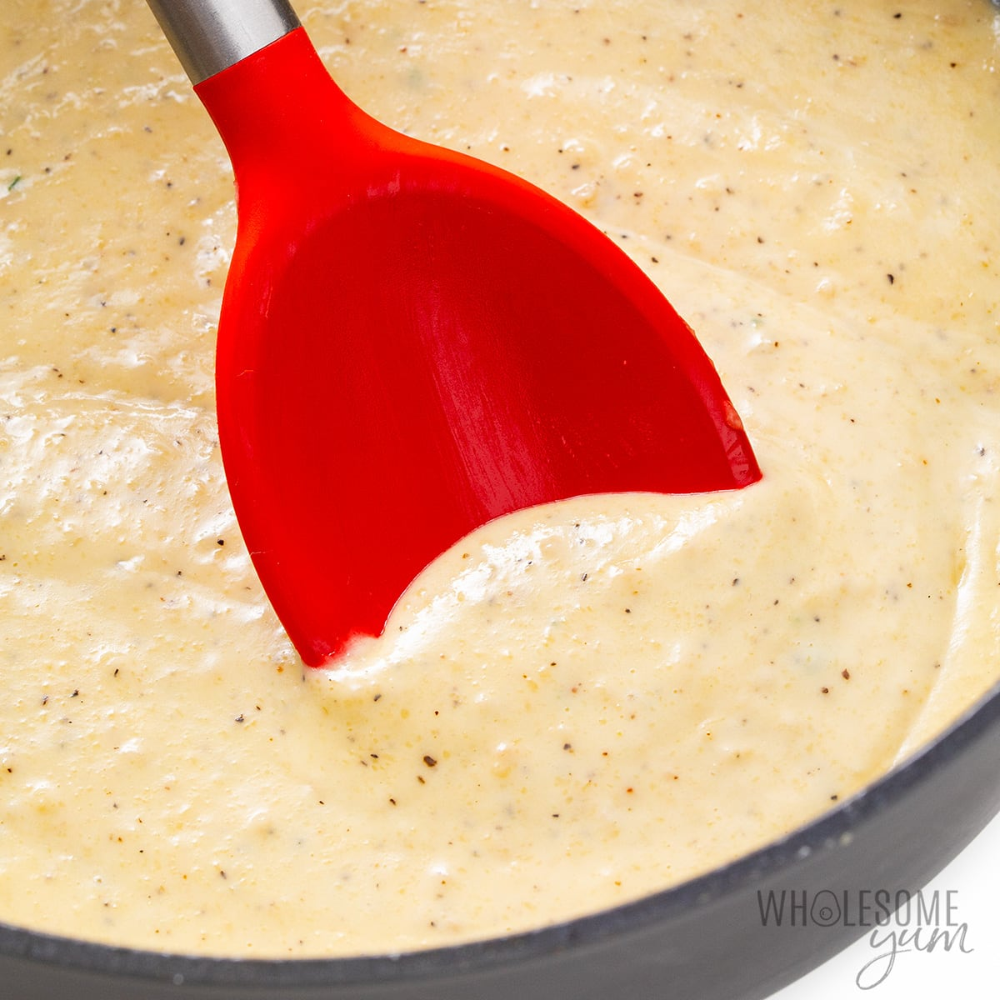

Alfredo

Description
This is a step-by-step guide to making a delicious, mouthwatering alfredo sauce.
Nothing better.
Ingredients
- 1/2 Cup Butter
- 1 & 1/2 Cups Heavy Whipping Cream
- 1 garlic
- 1 Teaspoon Italian Seasoning
- 2 Cups Freshly Grated Parmesan Cheese
How to Make Alfredo Step-By-Step
Here's a very brief overview of what you can expect when you make homemade alfredo sauce:
- Add the butter and cream to a large skillet.
- Simmer over low heat for 2 minutes.
- Whisk in the garlic, Italian seasoning, salt, and pepper for one minute.
- Whisk in the parmesan cheese until melted.